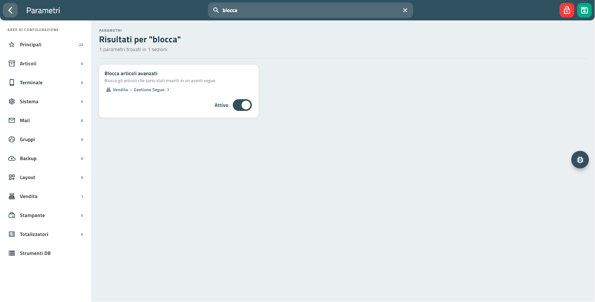
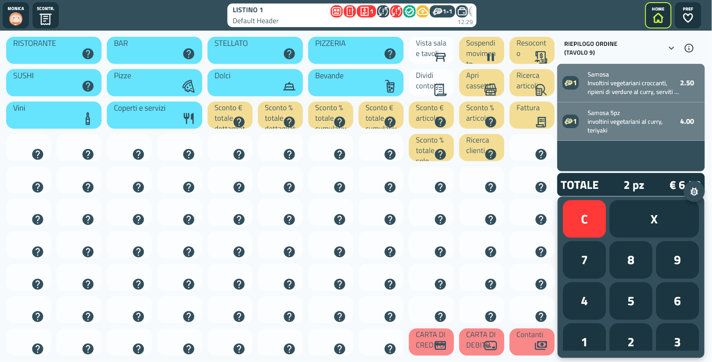
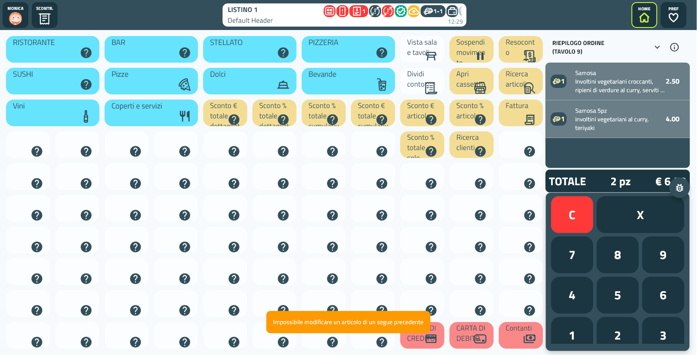
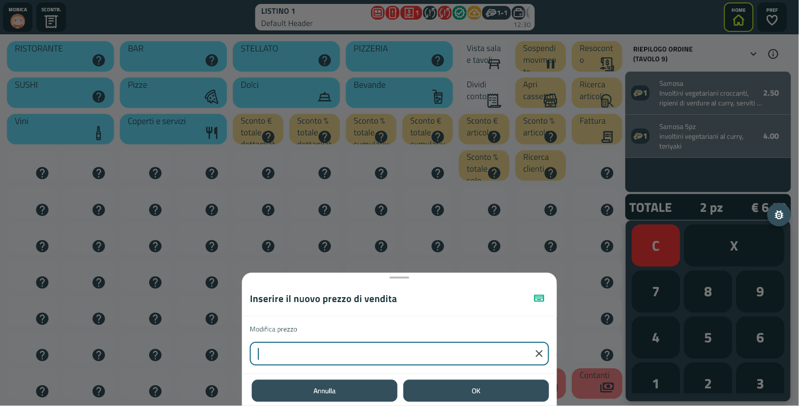
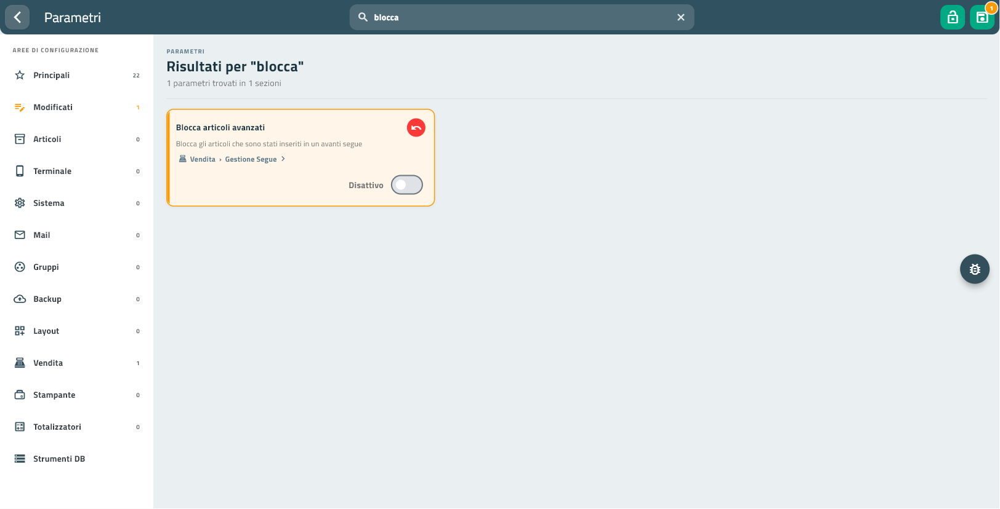
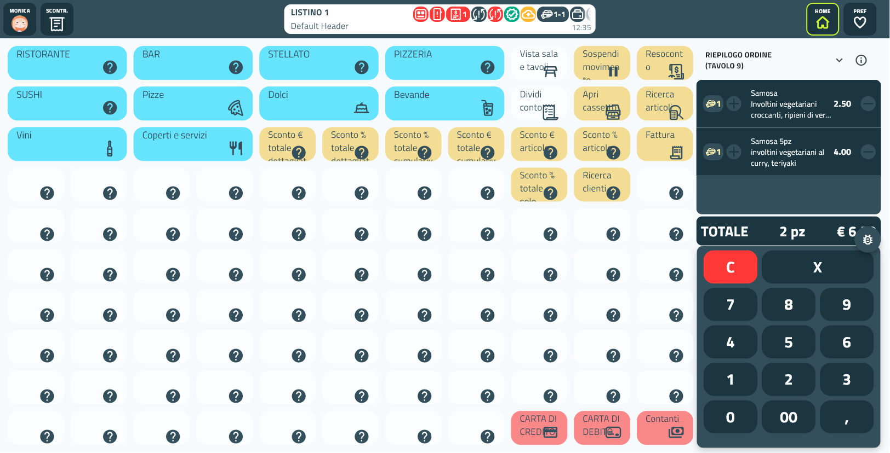

Segue già in cucina: il parametro «Blocca articoli avanzati»
Quando un'uscita (segue) è già partita in cucina, il parametro Blocca articoli avanzati decide cosa si può ancora cambiare sui suoi piatti. Il blocco vale al tavolo, con la gestione dei segue attiva.
Risponde a due richieste dei locali: poter cambiare il prezzo di un piatto già avanzato, e poter stornare un piatto già stampato in un segue.
Come si usa
Dove si imposta
- Parametri → cercare «blocca» (oppure area Vendita › Gestione Segue).
- Sbloccare la pagina con il lucchetto, scegliere Attivo (predefinito) o Disattivo e salvare con il pulsante verde.

Il parametro trovato con la ricerca dei Parametri
Con il parametro attivo (predefinito)
-
I piatti di un segue già partito restano in griglia in grigio, senza i pulsanti + e −.

Tavolo riaperto dopo il «via» del segue 1: righe bloccate
-
Elimina riga (storno), modifica quantità, split, varianti, note e «Sposta in altro segue» sono rifiutati con l'avviso «Impossibile modificare un articolo di un segue precedente».

Storno rifiutato su un piatto già partito
-
Prezzo, IVA, sconto e omaggio si possono cambiare: toccano solo l'importo, non la cucina.

La modifica del prezzo resta permessa
-
Un piatto aggiunto per un segue già partito finisce nel segue successivo, così esce in cucina al prossimo «via».
- Piatti già inviati ma di un segue non ancora partito: il + non aumenta la riga (il pezzo in più va su una riga nuova) e il − scende solo fino alla quantità già inviata. L'avviso è «Articolo già inviato in cucina: modifica non consentita».
Con il parametro disattivo

Parametro portato a Disattivo, da salvare
- Le righe tornano modificabili, con + e −.
- Lo storno è permesso: alla sospensione del tavolo esce in cucina l'annullo, con la quantità negativa sotto il segue del piatto.

Con il blocco spento le righe hanno di nuovo + e −
Eccezione per alcuni operatori
Il permesso Modifica righe inviate in cucina del gruppo di operatori toglie il blocco a chi lo ha. È spento di default: va acceso solo per chi deve poter correggere i piatti già partiti, per esempio il responsabile di sala.
Altre novità su tavoli e comande
- Pressione lunga su «Sospendi»: sospende il conto senza stampare le comande, dopo una domanda di conferma.
- «Coperti obbligatori» su una sala senza articoli di tipo coperto: la cassa propone di crearne uno.
- Corretti: tavolo che restava «in corso» dopo Dividi conto o conto alla romana; articoli spariti spostandoli fra tavoli; piatto tolto da un segue già in cucina senza annullo; numero d'asporto ripetuto.
Riferimenti
Vale per Inventa One 2.0.21 (schermate della 2.0.20). Guida verificata il 16/11/2026.
Card di riferimento: IFEV-4045, IFEV-4049. FST collegate: FST-3157, FST-3158.